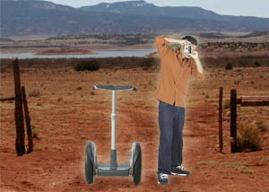
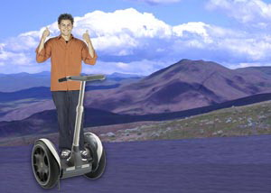

Записи про подорож Сполученими Штатами на сегвеї!

Що ж, я проїхав вже 1200 миль, і по дорозі відвідав кілька цікавих місць:
Сьогодні на узбіччі дороги я побачив кілька вивісок у стилі Burma Shave:
"Автівки, що проїжджають повз,
коли ти не бачиш їх,
можуть збити тебе.
Зазирни у вічність".
Тепер я точно не пропускатиму жодної машини.

Мій перший день подорожі! Не можу повірити, що я нарешті все спакував і зібрався в дорогу. Оскільки я їду на сегвеї, я не зміг узяти багато речей:
Тільки найнеобхідніше. Як сказав би Лао Цзи: Подорож
у тисячу миль починається з одного кроку - і так само
на сегвеї
.